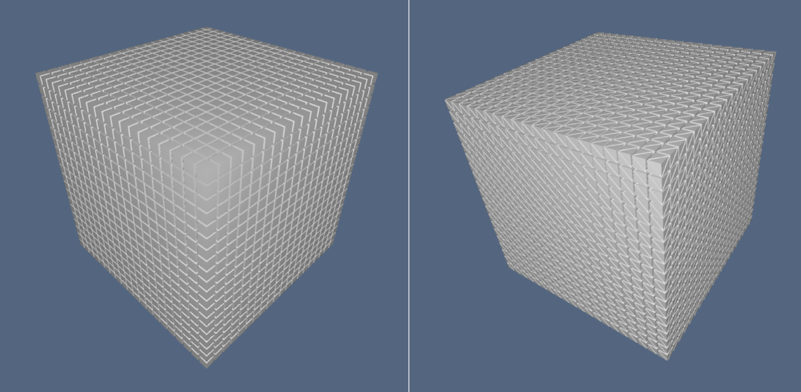
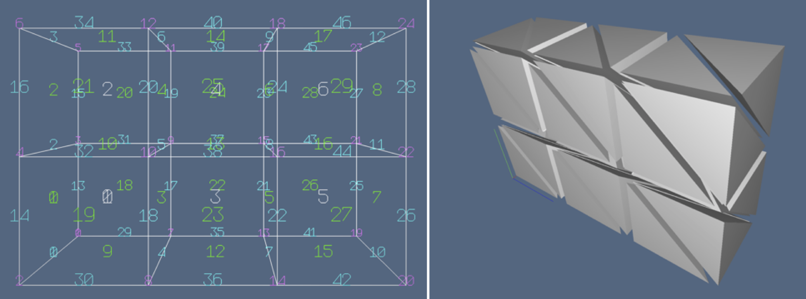
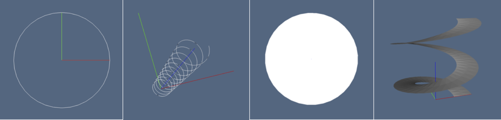
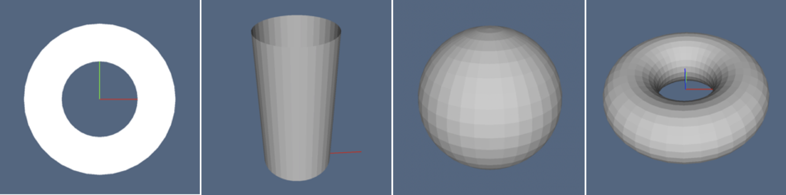
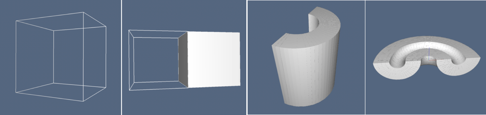

Solid primitives by domain mapping
The mapper.jl file contains the implementation of several parametric primitives, including curves, surfaces and solids embedded in either 2D or 3D.
The constructive approach is common to all methods. It consists in generating a simplicial or cuboidal decomposition of a simple geometrical domain in u,v or u,v,w parametric space. Then a change of coordinates, e.g. from Cartesian to polar or cylindrical coordinates, is applied to the vertices of the cellular complex decomposing the domain.

Figure 1: Cellular 3-complexes, slightly exploded: (a) cuboidal mesh; (b) simplicial mesh.
So, the mapped domain produces a curved manifold in 2D or 3D space. To obtain a closed curved surface, i.e. a manifold-without-boundary, as in the case of a 2-sphere in 3D, or of the toroidal surface in 3D, a suitable identification of coincident mapped points is performed.
Basics of LAR models
A very simple LAR model is a 2D square with a vertex on the origin:
julia> square=([[0.; 0] [0; 1] [1; 0] [1; 1]], [[1,2,3,4]], [[1,2], [1,3], [2,4], [3,4]])
([0.0 0.0 1.0 1.0; 0.0 1.0 0.0 1.0], Array{Int64,1}[[1, 2, 3, 4]], Array{Int64,1}[[1, 2],
[1, 3], [2, 4], [3, 4]])
Conventional names for the arrays of vertices, faces and edges:
julia> V,FV,EV = square
([0.0 0.0 1.0 1.0; 0.0 1.0 0.0 1.0], Array{Int64,1}[[1, 2, 3, 4]], Array{Int64,1}[[1, 2],
[1, 3], [2, 4], [3, 4]])V may be either of type Array{Float64,2} or Array{Int64,2}
julia> Lar = LinearAlgebraicRepresentation
julia> V::Lar.Points
2×4 Array{Float64,2}:
0.0 0.0 1.0 1.0
0.0 1.0 0.0 1.0The arrays containing the $p$-dimensional ($2\leq p\leq d$) cells of a $d$-complex must be of type Array{Array{Int64,1},1}, where each element contains the unordered array of indices of vertices on the boundary of the cell:
julia> EV::Lar.Cells
4-element Array{Array{Int64,1},1}:
[1, 2]
[1, 3]
[2, 4]
[3, 4]Cuboidal and simplicial grids
LinearAlgebraicRepresentation, as its ancestor geometric language PLaSM and its father library pyplasm aims to be multidimensional. Hence some functions generate geometric models of varying dimensions. Important examples are cuboidGrid and simplexGrid, whose unique parameter is the shape of the generated mesh, i.e. the number of $d$-dimensional cells in each dimension, with d = length(shape). The vertices of the mesh stay on the integer grid of suitable dimension and size.
julia> shape = [1,1,1]
julia> Lar.cuboidGrid(shape)
([0.0 0.0 … 1.0 1.0; 0.0 0.0 … 1.0 1.0; 0.0 1.0 … 0.0 1.0],
Array{Int64,1}[[1, 2, 3, 4, 5, 6, 7, 8]])Hence we have, for single-cell 1-, 2-, 3-, and 4-dimensional LAR models:
julia> Lar.cuboidGrid([1])
([0.0 1.0], Array{Int64,1}[[1, 2]])
julia> Lar.cuboidGrid([1,1])
([0.0 0.0 1.0 1.0; 0.0 1.0 0.0 1.0], Array{Int64,1}[[1, 2, 3, 4]])
julia> Lar.cuboidGrid([1,1,1])
([0.0 0.0 … 1.0 1.0; 0.0 0.0 … 1.0 1.0; 0.0 1.0 … 0.0 1.0],
Array{Int64,1}[[1, 2, 3, 4, 5, 6, 7, 8]])
julia> Lar.cuboidGrid([1,1,1,1])
([0.0 0.0 … 1.0 1.0; 0.0 0.0 … 1.0 1.0; 0.0 0.0 … 1.0 1.0; 0.0 1.0 … 0.0 1.0],
Array{Int64,1}[[1, 2, 3, 4, 5, 6, 7, 8, 9, 10, 11, 12, 13, 14, 15, 16]])Two examples follows for a $20\times 20$ mesh in 2D, and a $20\times 20\times 20$ mesh in 3D. Of course, their highest dimensional cells (quads and hexs) have 4 and 8 vertices, respectively.
julia> Lar.cuboidGrid([20,20])
([0.0 0.0 … 20.0 20.0; 0.0 1.0 … 19.0 20.0], Array{Int64,1}[[1, 2, 22, 23], [2, 3, 23,
24], [3, 4, 24, 25], [4, 5, 25, 26], [5, 6, 26, 27], [6, 7, 27, 28], [7, 8, 28, 29], [8,
9, 29, 30], [9, 10, 30, 31] … [415, 416, 436, 437], [416, 417, 437, 438], [417, 418,
438, 439], [418, 419, 439, 440], [419, 420, 440, 441]])
julia> Lar.cuboidGrid([20,20,20])
([0.0 0.0 … 20.0 20.0; 0.0 0.0 … 20.0 20.0; 0.0 1.0 … 19.0 20.0], Array{Int64,1}[[1, 2,
22, 23, 442, 443, 463, 464], [2, 3, 23, 24, 443, 444, 464, 465], [3, 4, 24, 25, 444, 445,
465, 466] … [8797, 8798, 8818, 8819, 9238, 9239, 9259, 9260], [8798, 8799, 8819, 8820,
9239, 9240, 9260, 9261]])
Figure 2: Cellular 3-complexes: (a) cuboidal mesh, with 0-, 1-, 2-, and 3-cells numbered with different colors; (b) exploded simplicial mesh, with 6 tetrahedra (3-cells) per mesh cube.
Similarly, you can generate a multidimensional mesh of $d$-simplexes ($d=1,2,3,\dots$) with the simplexGrid function, having as single parameter the (cuboidal) shape of the mesh.
Let us generate $d$ (increasing in dimension) simplicial complexes partitioning a single hypercube $[0,1]^d$:
julia> Lar.simplexGrid([1]) # one segment in [0,1]
# output
([0.0 1.0], Array{Int64,1}[[1, 2]])
julia> Lar.simplexGrid([1,1]) # two triangles in [0,1]^2
# output
([0.0 1.0 0.0 1.0; 0.0 0.0 1.0 1.0], Array{Int64,1}[[1, 2, 3], [2, 3, 4]])
julia> Lar.simplexGrid([1,1,1]) # six tetrahedra in [0,1]^3
# output
([0.0 1.0 … 0.0 1.0; 0.0 0.0 … 1.0 1.0; 0.0 0.0 … 1.0 1.0], Array{Int64,1}[[1, 2, 3, 5],
[2, 3, 5, 6], [3, 5, 6, 7], [2, 3, 4, 6], [3, 4, 6, 7], [4, 6, 7, 8]])
julia> Lar.simplexGrid([1,1,1,1]) # 24 pentatopes in [0,1]^4
# output
([0.0 1.0 … 0.0 1.0; 0.0 0.0 … 1.0 1.0; 0.0 0.0 … 1.0 1.0; 0.0 0.0 … 1.0 1.0],
Array{Int64,1}[[1, 2, 3, 5, 9], [2, 3, 5, 9, 10], [3, 5, 9, 10, 11], [5, 9, 10, 11, 13],
[2, 3, 5, 6, 10] … [4, 6, 7, 11, 12], [6, 7, 11, 12, 14], [7, 11, 12, 14, 15], [4, 6, 7,
8, 12], [6, 7, 8, 12, 14], [7, 8, 12, 14, 15], [8, 12, 14, 15, 16]]) Then look at the simplicial partition (3D triangulation) of the domain $[0,20]\times[0,20]\times[0,20] \subset \mathbf{R}^3$ shown in Figure 1b, and generated by the Julia expression below:
julia> Lar.simplexGrid([20,20,20])
# output
([0.0 1.0 … 19.0 20.0; 0.0 0.0 … 20.0 20.0], Array{Int64,1}[[1, 2, 22], [2, 22, 23], [2,
3, 23], [3, 23, 24], [3, 4, 24], [4, 24, 25], [4, 5, 25], [5, 25, 26], [5, 6, 26], [6, 26,
27] … [415, 416, 436], [416, 436, 437], [416, 417, 437], [417, 437, 438], [417, 418,
438], [418, 438, 439], [418, 419, 439], [419, 439, 440], [419, 420, 440], [420, 440,
441]]) List of currently available primitives
The mapper module aims to provide the tools needed to apply both dimension-independent affine transformations and general simplicial maps to geometric objects and assemblies developed within the LAR scheme. A large number of surfaces and primitives solids are definable using the map function and the local parametrization.
Curves
Primitive one-dimensional objects:
circle- Circle centered in the originhelix- Helix curve about the z axis
Surfaces

Figure 3: Cellular 1- and 2-complexes: (a) 2D unit circle; (b) spiral curve embedded in 3D; (c) 2D unit disk; (3) spiraloid surface in 3D.
Primitive two-dimensional objects:
disk- Disk centered in the originhelicoid- Helicoid about the z axisring- Ring centered in the origincylinder- Cylinder surface with z axissphere- Spherical surface of given radiustoroidal- Toroidal surface of given radiusescrown- Half-toroidal surface of given radiuses

Figure 4: Cellular 2- and 3-complexes: (a) 2D disk; (b) cylinder surface in 3D; (c) 2-sphere surface in 3D; (3) toroidal surface in 3D.
Solids
Primitive three-dimensional objects:
cuboid- Solid cuboid of given extreme vectorsball- Solid Sphere of given radiusrod- Solid cylinder of given radius and heighthollowCyl- Hollow cylinder of given radiuses and heighthollowBall- Hollow sphere of given radiusestorus- Solid torus of given radiusespizza- Solid pizza of given radiuses

Figure 5: Cellular complexes: (a) 1-skeleton of 3D cube; (b) assembly of cell complexes of mixed dimensions; (c) 3-mesh of portion of hollow solid cylinder; (d) 3-mesh of a portion of hollow solid torus.
Implementation
The coding of the generating functions for the various geometric primitives follows the below guidelines:
* Higher level function interface. Every generating function is of type $fun: parms_1 \to (parms_2 \to results),$ with $parms_1=p_1\times p_2\times cdots \times p_m$ and $parms_2=q_1\times q_2\times cdots \times q_n$. The $p_i$ parameters concern the specification of the coordinate functions of the mapping. The $q_j$ parameters ($1\leq j\leq n\in\{1,2,3\}$) affect the discretization of mapping domain.
* Simplicial or cuboidal decomposition. Discretization primitives simplexGrid() or cuboidGrid() are used for the two cases. Both primitives are dimension-independent, i.e. may decompose 1D, 2D, 3D,..., nD domains, depending only on the array shape of the generated cellular complex. The complex is generated in LAR format (vertices,cells), where vertices have integer coordinates.
* Coordinate functions. Are applied to the integer vertices, so producing their mapped instances and store them in a Array{Array{Int64,1},1}
* Complex simplification. Finally, the geometrically coincident vertices are identified, the generated cells are translated to the new vertex indices, and cells are simplified from multiple identical indices. This may induce the sewing of domain boundaries according to expected topology of the curved manifold and/or the reduction of independent vertices in cells of the complex.